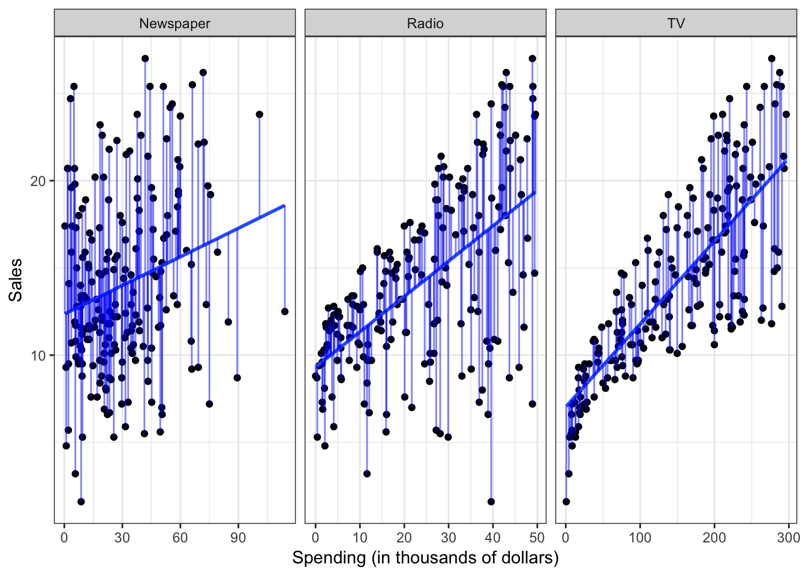
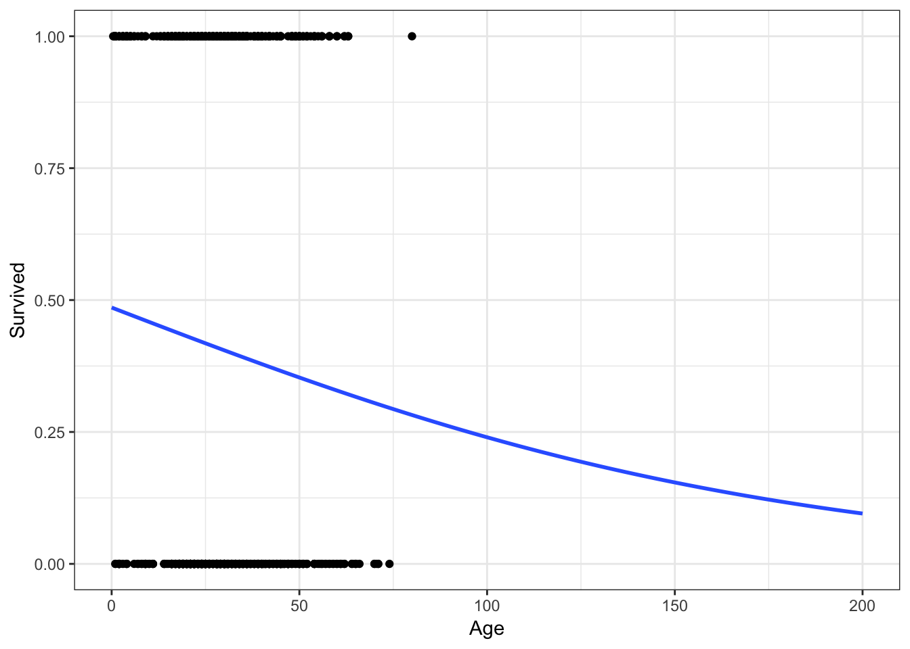
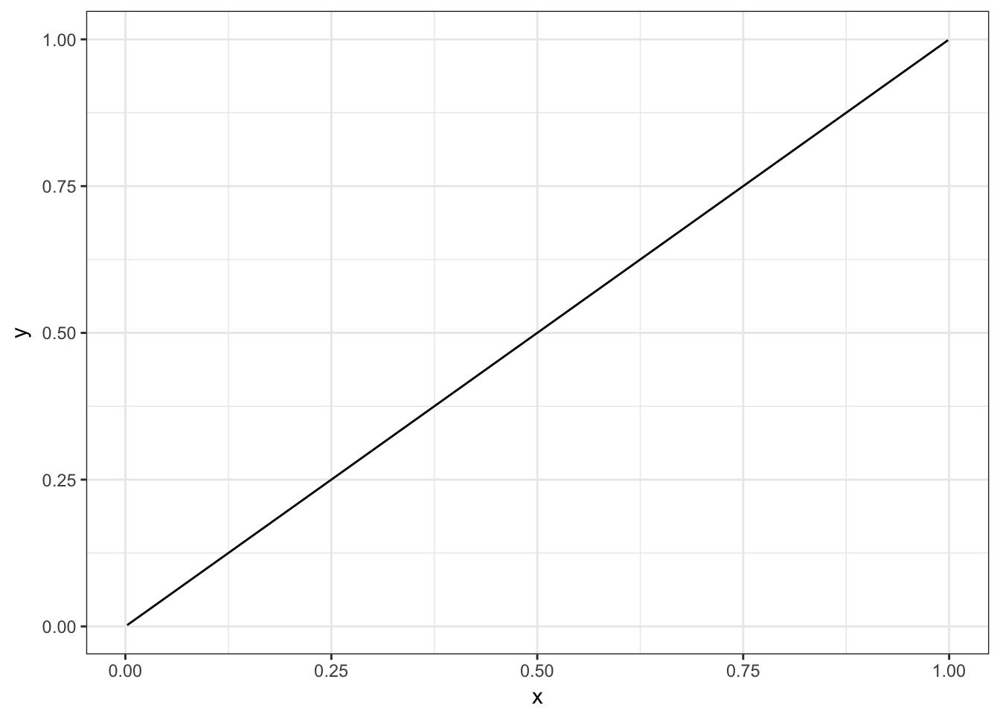
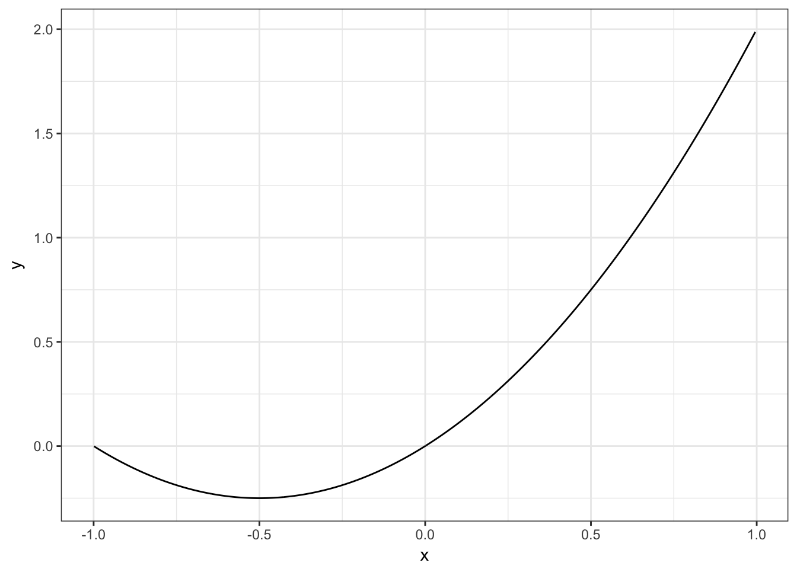
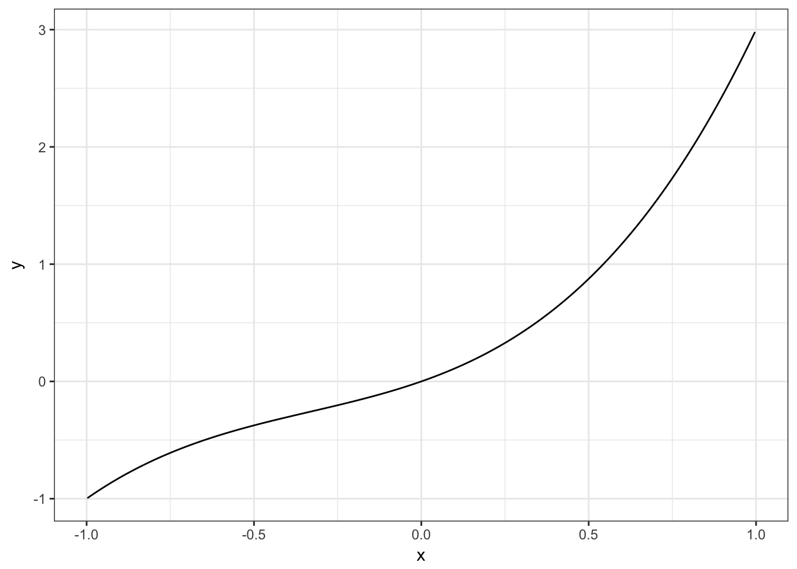
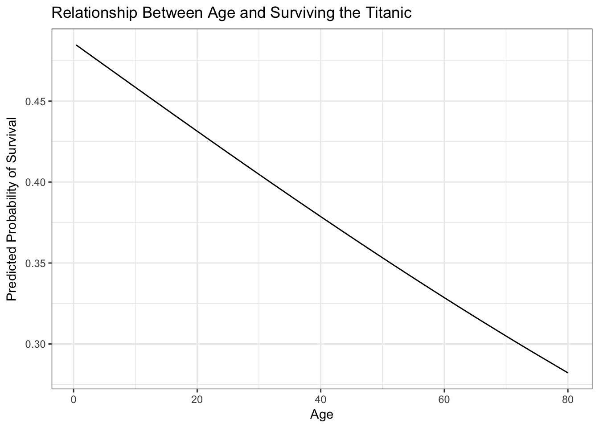

This content is from the fall 2016 version of this course. Please go here for the most recent version.
Statistical learning: basics and classification problems
library(tidyverse)
theme_set(theme_bw())Objectives
- Define statistical learning
- Review the major goals of statistical learning
- Explain the difference between parametric and non-parametric methods
- Identify the difference between statistical learning and machine learning
- Distinguish regression from classification
- Demonstrate the use of logistic regression for classification
- Identify methods for assessing classification model accuracy
Statistical learning
What is statistical learning?
Statistical models attempt to summarize relationships between variables by reducing the dimensionality of the data. For example, here we have some simulated data on sales of Shamwow in 200 different markets. Our goal is to improve sales of the Shamwow. Since we cannot directly increase sales of the product (unless we go out and buy it ourselves), our only option is to increase advertising across three potential mediums: newspaper, radio, and TV.
In this example, the advertising budgets are our input variables, also called independent variables, features, or predictors. The sales of Shamwows is the output, also called the dependent variable or response.
By plotting the variables against one another using a scatterplot, we can see there is some sort of relationship between each medium’s advertising spending and Shamwow sales:
# get advertising data
advertising <- read_csv("data/Advertising.csv") %>%
tbl_df() %>%
select(-X1)# plot separate facets for relationship between ad spending and sales
plot_ad <- advertising %>%
gather(method, spend, -Sales) %>%
ggplot(aes(spend, Sales)) +
facet_wrap(~ method, scales = "free_x") +
geom_point() +
labs(x = "Spending (in thousands of dollars)")
plot_ad
But there seems to be a lot of noise in the data. How can we summarize this? We can do so by estimating a mathematical equation following the general form
\[Y = f(X) + \epsilon\]
where \(f\) is some fixed, unknown function of the relationship between the independent variable(s) \(X\) and the dependent variable \(Y\), with some random error \(\epsilon\).
Statistical learning refers to the set of approaches for estimating \(f\). There are many potential approaches to defining the functional form of \(f\). We already saw one method for doing so, ordinary least squares (OLS). Applied here, the results would look like:
plot_ad +
geom_smooth(method = "lm", se = FALSE)
However statistical learning (and machine learning) allows us to use a wide range of functional forms beyond a simple linear model.
Why estimate \(f\)?
We’ve already discussed the two major goals of statistical modeling:
- Prediction - use our knowledge of the relationship between \(X\) and \(Y\) to predict \(Y\) for given values of \(X\). Often the function \(f\) is treated as a black box - we don’t care what the function is, as long as it makes accurate predictions. If we are trying to boost sales of Shamwow, we may not care why specific factors drive an increase in sales - we just want to know how to adjust our advertising budgets to maximize sales.
- Inference - use our knowledge of \(X\) and \(Y\) to understand the relationship between the variables. Here we are most interested in the explanation, not the prediction. So in the Shamwow example, we may not care about actual sales of the product - instead, we may be economists who wish to understand how advertising spending influences product sales. We don’t care about the actual product, we simply want to learn more about the process and generalize it to a wider range of settings.
How do we estimate \(f\)?
There are two major approaches to estimating \(f\): parametric and non-parametric methods.
Parametric methods
Parametric methods involve a two-stage process:
- First make an assumption about the functional form of \(f\). For instance, OLS assumes that the relationship between \(X\) and \(Y\) is linear. This greatly simplifies the problem of estimating the model because we know a great deal about the properties of linear models.
- After a model has been selected, we need to fit or train the model using the actual data. We demonstrated this previously with ordinary least squares. The estimation procedure minimizes the sum of the squares of the differences between the observed responses \(Y\) and those predicted by a linear function \(\hat{Y}\).
method_model <- function(df) {
lm(Sales ~ spend, data = df)
}
ad_pred <- advertising %>%
gather(method, spend, -Sales) %>%
group_by(method) %>%
nest() %>%
mutate(model = map(data, method_model),
pred = map(model, broom::augment)) %>%
unnest(pred)
plot_ad +
geom_smooth(method = "lm", se = FALSE) +
geom_linerange(data = ad_pred,
aes(ymin = Sales, ymax = .fitted),
color = "blue",
alpha = .5) 
This is only one possible estimation procedure, but is popular because it is relatively intuitive. This model-based approach is referred to as parametric, because it simplifies the problem of estimating \(f\) to estimating a set of parameters in the function:
\[Y = \beta_0 + \beta_{1}X_1\]
where \(Y\) is the sales, \(X_1\) is the advertising spending in a given medium (newspaper, radio, or TV), and \(\beta_0\) and \(\beta_1\) are parameters defining the intercept and slope of the line.
The downside to parametric methods is that they assume a specific functional form of the relationship between the variables. Sometimes relationships really are linear - often however they are not. They could be curvilinear, parbolic, interactive, etc. Unless we know this a priori or test for all of these potential functional forms, it is possible our parametric method will not accurately summarize the relationship between \(X\) and \(Y\).
Non-parametric methods
Non-parametric methods do not make any assumptions about the functional form of \(f\). Instead, they use the data itself to estimate \(f\) so that it gets as close as possible to the data points without becoming overly complex. By avoiding any assumptions about the functional form, non-parametric methods avoid the issues caused by parametic models. However, by doing so non-parametric methods require a large set of observations to avoid overfitting the data and obtain an accurate estimate of \(f\).
One non-parametric method is locally weighted scatterplot smoothing (LOWESS or LOESS). This method estimates a regression line based on localized subsets of the data, building up the global function \(f\) point-by-point. Here is an example of a LOESS on the ethanol dataset in the lattice package:

The LOESS is built up point-by-point:
One important argument you can control with LOESS is the span, or how smooth the LOESS function will become. A larger span will result in a smoother curve, but may not be as accurate.
Supervised vs. unsupervised learning
All the examples above implement supervised learning. That is, for each observation we have both the predictor measurements and the response measurements (i.e. an \(X\) and \(Y\)). We seek to fit a model that summarizes the relationship between the predictors and response.
In unsupervised learning, all we have is a set of measurements \(X\) for a series of observations, but no corresponding response \(Y\). Without an outcome measure, we cannot fit a linear regression model or employ a similar method. That does not mean we cannot use statistical learning to understand the data better. One example of unsupervised learning is cluster analysis. The goal is to determine whether the observations fall into distinct categories. Latent Direchlet allocation (LDA) is an example of cluster analysis applied to text data. In LDA, the individual words are the features or measurements we use to determine the best fitting clusters.
Statistical learning vs. machine learning
- Statistical learning
- Subfield of statistics
- Focused predominantly on inference
- Identify underlying relationships between variables
- Emphasizes models and their interpretability
- Concerned with uncertainty and precision
- Machine learning
- Subfield of computer science
- Focused predominantly on prediction
- Generally larger scale applications (think predictive analytics at Google or Netflix)
- Emphasizes prediction accuracy
- Will sacrifice model interpretability for better accuracy
- In truth, both are quite similar approaches to inference and prediction
- Both use the same major methods of modeling (parametric and non-parametric)
- Different language, speaking the same thing
Classification vs. regression
Variables can be classified as quantitative or qualitative. Quantitative variables take on numeric values. In contrast, qualitative variables take on different classes, or discrete categories. Qualitative variables can have any number of classes, though binary categories are frequent:
- Yes/no
- Male/female
Problems with a quantitative dependent variable are typically called regression problems, whereas qualitative dependent variables are called classification problems. Part of this distinction is merely semantic, but different methods may be employed depending on the type of response variable. For instance, you would not use linear regression on a qualitative response variable. Conceptually, how would you define a linear function for a response variable that takes on the values “male” or “female”? It doesn’t make any conceptual sense. Instead, you can employ classification methods such as logistic regression to estimate the probability that based on a set of predictors a specific observation is part of a response class.
That said, whether predictors are qualitative or quantitative is not important in determining whether the problem is one of regression or classification. As long as qualitative predictors are properly coded before the analysis is conducted, they can be used for either type of problem.
Classification problems
The sinking of RMS Titanic provided the world with many things:
- A fundamental shock to the world as its faith in supposedly indestructible technology was shattered by a chunk of ice
- Perhaps the best romantic ballad of all time
A tragic love story

Why did Jack have to die? Why couldn’t he have made it onto a lifeboat like Cal? We may never know the answer, but we can generalize the question a bit: why did some people survive the sinking of the Titanic while others did not?
In essence, we have a classification problem. The response is a binary variable, indicating whether a specific passenger survived. If we combine this with predictors that describe each passenger, we might be able to estimate a general model of survival.1
Kaggle is an online platform for predictive modeling and analytics. They run regular competitions where they provide the public with a question and data, and anyone can estimate a predictive model to answer the question. They’ve run a popular contest based on a dataset of passengers from the Titanic. Let’s download the dataset and load it into R.2
titanic <- read_csv("data/titanic_train.csv")
titanic %>%
head() %>%
knitr::kable()| PassengerId | Survived | Pclass | Name | Sex | Age | SibSp | Parch | Ticket | Fare | Cabin | Embarked |
|---|---|---|---|---|---|---|---|---|---|---|---|
| 1 | 0 | 3 | Braund, Mr. Owen Harris | male | 22 | 1 | 0 | A/5 21171 | 7.2500 | NA | S |
| 2 | 1 | 1 | Cumings, Mrs. John Bradley (Florence Briggs Thayer) | female | 38 | 1 | 0 | PC 17599 | 71.2833 | C85 | C |
| 3 | 1 | 3 | Heikkinen, Miss. Laina | female | 26 | 0 | 0 | STON/O2. 3101282 | 7.9250 | NA | S |
| 4 | 1 | 1 | Futrelle, Mrs. Jacques Heath (Lily May Peel) | female | 35 | 1 | 0 | 113803 | 53.1000 | C123 | S |
| 5 | 0 | 3 | Allen, Mr. William Henry | male | 35 | 0 | 0 | 373450 | 8.0500 | NA | S |
| 6 | 0 | 3 | Moran, Mr. James | male | NA | 0 | 0 | 330877 | 8.4583 | NA | Q |
The codebook contains the following information on the variables:
VARIABLE DESCRIPTIONS:
Survived Survival
(0 = No; 1 = Yes)
Pclass Passenger Class
(1 = 1st; 2 = 2nd; 3 = 3rd)
Name Name
Sex Sex
Age Age
SibSp Number of Siblings/Spouses Aboard
Parch Number of Parents/Children Aboard
Ticket Ticket Number
Fare Passenger Fare
Cabin Cabin
Embarked Port of Embarkation
(C = Cherbourg; Q = Queenstown; S = Southampton)
SPECIAL NOTES:
Pclass is a proxy for socio-economic status (SES)
1st ~ Upper; 2nd ~ Middle; 3rd ~ Lower
Age is in Years; Fractional if Age less than One (1)
If the Age is Estimated, it is in the form xx.5
With respect to the family relation variables (i.e. sibsp and parch)
some relations were ignored. The following are the definitions used
for sibsp and parch.
Sibling: Brother, Sister, Stepbrother, or Stepsister of Passenger Aboard Titanic
Spouse: Husband or Wife of Passenger Aboard Titanic (Mistresses and Fiances Ignored)
Parent: Mother or Father of Passenger Aboard Titanic
Child: Son, Daughter, Stepson, or Stepdaughter of Passenger Aboard Titanic
Other family relatives excluded from this study include cousins,
nephews/nieces, aunts/uncles, and in-laws. Some children travelled
only with a nanny, therefore parch=0 for them. As well, some
travelled with very close friends or neighbors in a village, however,
the definitions do not support such relations.So if this is our data, Survived is our response variable, and the remaining variables are predictors, how can we determine who survives and who dies?
A linear regression approach
Let’s concentrate first on the relationship between age and survival. Using the methods we previously learned, we could estimate a linear regression model:
ggplot(titanic, aes(Age, Survived)) +
geom_point() +
geom_smooth(method = "lm", se = FALSE)
Hmm. Not terrible, but you can immediately notice a couple of things. First, the only possible values for Survival are \(0\) and \(1\). Yet the linear regression model gives us predicted values such as \(.4\) and \(.25\). How should we interpret those?
One possibility is that these values are predicted probabilities. That is, the estimated probability a passenger will survive given their age. So someone with a predicted probability of \(.4\) has a 40% chance of surviving. Okay, but notice that because the line is linear and continuous, it extends infinitely in both directions of age.
ggplot(titanic, aes(Age, Survived)) +
geom_point() +
geom_smooth(method = "lm", se = FALSE, fullrange = TRUE) +
xlim(0, 200)
What happens if a 200 year old person is on the Titanic? They would have a \(-.1\) probability of surviving. You cannot have a probability outside of the \([0,1]\) interval! Admittedly this is a trivial example, but in other circumstances this can become a more realistic scenario.
Or what if we didn’t want to predict survival, but instead predict the port from which an individual departed (Cherbourg, Queenstown, or Southampton). We could try and code this as a numeric response variable:
| Numeric value | Port |
|---|---|
| 1 | Cherbourg |
| 2 | Queenstown |
| 3 | Southampton |
But why not instead code it:
| Numeric value | Port |
|---|---|
| 1 | Queenstown |
| 2 | Cherbourg |
| 3 | Southampton |
Or even:
| Numeric value | Port |
|---|---|
| 1 | Southampton |
| 2 | Cherbourg |
| 3 | Queenstown |
There is no inherent ordering to this variable. Any claimed linear relationship between a predictor and port of embarkation is completely dependent on how we convert the classes to numeric values.
Logistic regression
Rather than modeling the response \(Y\) directly, logistic regression instead models the probability that \(Y\) belongs to a particular category. In our first Titanic example, the probability of survival can be written as:
\[P(\text{survival} = \text{Yes} | \text{age})\]
The values of \(P(\text{survival} = \text{Yes} | \text{age})\) (or simply \(p(\text{survival})\) will range between 0 and 1. Given that predicted probability, we could predict anyone with for whom \(p(\text{survival}) > .5\) will survive the sinking, and anyone else will die.3
We can estimate the logistic regression model using the glm function.
survive_age <- glm(Survived ~ Age, data = titanic, family = binomial)
summary(survive_age)##
## Call:
## glm(formula = Survived ~ Age, family = binomial, data = titanic)
##
## Deviance Residuals:
## Min 1Q Median 3Q Max
## -1.1488 -1.0361 -0.9544 1.3159 1.5908
##
## Coefficients:
## Estimate Std. Error z value Pr(>|z|)
## (Intercept) -0.05672 0.17358 -0.327 0.7438
## Age -0.01096 0.00533 -2.057 0.0397 *
## ---
## Signif. codes: 0 '***' 0.001 '**' 0.01 '*' 0.05 '.' 0.1 ' ' 1
##
## (Dispersion parameter for binomial family taken to be 1)
##
## Null deviance: 964.52 on 713 degrees of freedom
## Residual deviance: 960.23 on 712 degrees of freedom
## (177 observations deleted due to missingness)
## AIC: 964.23
##
## Number of Fisher Scoring iterations: 4Which produces a line that looks like this:
ggplot(titanic, aes(Age, Survived)) +
geom_point() +
geom_smooth(method = "glm", method.args = list(family = "binomial"),
se = FALSE)
It’s hard to tell, but the line is not perfectly linear. Let’s expand the range of the x-axis to prove this:
ggplot(titanic, aes(Age, Survived)) +
geom_point() +
geom_smooth(method = "glm", method.args = list(family = "binomial"),
se = FALSE, fullrange = TRUE) +
xlim(0,200)
No more predictions that a 200 year old has a \(-.1\) probability of surviving!
Adding predictions
To visualise the predictions from a model, we start by generating an evenly spaced grid of values that covers the region where our data lies. First we use modelr::data_grid to create a cleaned data frame of potential values:
library(modelr)
titanic_age <- titanic %>%
data_grid(Age)
titanic_age## # A tibble: 88 × 1
## Age
## <dbl>
## 1 0.42
## 2 0.67
## 3 0.75
## 4 0.83
## 5 0.92
## 6 1.00
## 7 2.00
## 8 3.00
## 9 4.00
## 10 5.00
## # ... with 78 more rowsNext we could use the add_predictions function to produce the predicted probabilities. This worked very well for linear models; unfortunately it is not perfect for logistic regression. This is because, in truth, logistic regression directly estimates the log-odds for the outcome. Instead, we want the plain old predicted probability. To do this, use this custom function to convert from log-odds to predicted probabilties:4
logit2prob <- function(x){
exp(x) / (1 + exp(x))
}library(modelr)
titanic_age <- titanic_age %>%
add_predictions(survive_age) %>%
mutate(pred = logit2prob(pred))
titanic_age## # A tibble: 88 × 2
## Age pred
## <dbl> <dbl>
## 1 0.42 0.4846727
## 2 0.67 0.4839882
## 3 0.75 0.4837691
## 4 0.83 0.4835501
## 5 0.92 0.4833037
## 6 1.00 0.4830847
## 7 2.00 0.4803475
## 8 3.00 0.4776115
## 9 4.00 0.4748768
## 10 5.00 0.4721436
## # ... with 78 more rowsWith this information, we can now plot the logistic regression line using the estimated model (and not just ggplot2::geom_smooth):
ggplot(titanic_age, aes(Age, pred)) +
geom_line() +
labs(title = "Relationship Between Age and Surviving the Titanic",
y = "Predicted Probability of Survival")
Multiple predictors
But as the old principle of the sea goes, “women and children first”. What if age isn’t the only factor effecting survival? Fortunately logistic regression handles multiple predictors:
survive_age_woman <- glm(Survived ~ Age + Sex, data = titanic,
family = binomial)
summary(survive_age_woman)##
## Call:
## glm(formula = Survived ~ Age + Sex, family = binomial, data = titanic)
##
## Deviance Residuals:
## Min 1Q Median 3Q Max
## -1.7405 -0.6885 -0.6558 0.7533 1.8989
##
## Coefficients:
## Estimate Std. Error z value Pr(>|z|)
## (Intercept) 1.277273 0.230169 5.549 2.87e-08 ***
## Age -0.005426 0.006310 -0.860 0.39
## Sexmale -2.465920 0.185384 -13.302 < 2e-16 ***
## ---
## Signif. codes: 0 '***' 0.001 '**' 0.01 '*' 0.05 '.' 0.1 ' ' 1
##
## (Dispersion parameter for binomial family taken to be 1)
##
## Null deviance: 964.52 on 713 degrees of freedom
## Residual deviance: 749.96 on 711 degrees of freedom
## (177 observations deleted due to missingness)
## AIC: 755.96
##
## Number of Fisher Scoring iterations: 4The coefficients essentially tell us the relationship between each individual predictor and the response, independent of other predictors. So this model tells us the relationship between age and survival, after controlling for the effects of gender. Likewise, it also tells us the relationship between gender and survival, after controlling for the effects of age. To get a better visualization of this, let’s use data_grid and add_predictions again:
titanic_age_sex <- titanic %>%
data_grid(Age, Sex) %>%
add_predictions(survive_age_woman) %>%
mutate(pred = logit2prob(pred))
titanic_age_sex## # A tibble: 176 × 3
## Age Sex pred
## <dbl> <chr> <dbl>
## 1 0.42 female 0.7815965
## 2 0.42 male 0.2330934
## 3 0.67 female 0.7813649
## 4 0.67 male 0.2328510
## 5 0.75 female 0.7812907
## 6 0.75 male 0.2327735
## 7 0.83 female 0.7812165
## 8 0.83 male 0.2326960
## 9 0.92 female 0.7811330
## 10 0.92 male 0.2326088
## # ... with 166 more rowsWith these predicted probabilities, we can now plot the separate effects of age and gender:
ggplot(titanic_age_sex, aes(Age, pred, color = Sex)) +
geom_line() +
labs(title = "Probability of Surviving the Titanic",
y = "Predicted Probability of Survival",
color = "Sex")
This graph illustrates a key fact about surviving the sinking of the Titanic - age was not really a dominant factor. Instead, one’s gender was much more important. Females survived at much higher rates than males, regardless of age.
Quadratic terms
Logistic regression, like linear regression, assumes each predictor has an independent and linear relationship with the response. That is, it assumes the relationship takes the form \(y = \beta_0 + \beta_{1}x\) looks something like this:
sim_line <- tibble(x = runif(1000),
y = x * 1)
ggplot(sim_line, aes(x, y)) +
geom_line()
But from algebra we know that variables can have non-linear relationships. Perhaps instead the relationship is parabolic like \(y = \beta_0 + \beta_{1}x + \beta_{2}x^2\):
sim_line <- tibble(x = runif(1000, -1, 1),
y = x^2 + x)
ggplot(sim_line, aes(x, y)) +
geom_line()
Or a more general quadratic equation \(y = \beta_0 + \beta_{1}x + \beta_{2}x^2 + \beta_{3}x^3\):
sim_line <- tibble(x = runif(1000, -1, 1),
y = x^3 + x^2 + x)
ggplot(sim_line, aes(x, y)) +
geom_line()
These can be accounted for in a logistic regression:
survive_age_square <- glm(Survived ~ Age + I(Age^2), data = titanic,
family = binomial)
summary(survive_age_square)##
## Call:
## glm(formula = Survived ~ Age + I(Age^2), family = binomial, data = titanic)
##
## Deviance Residuals:
## Min 1Q Median 3Q Max
## -1.2777 -1.0144 -0.9516 1.3421 1.4278
##
## Coefficients:
## Estimate Std. Error z value Pr(>|z|)
## (Intercept) 0.2688449 0.2722529 0.987 0.3234
## Age -0.0365193 0.0172749 -2.114 0.0345 *
## I(Age^2) 0.0003965 0.0002538 1.562 0.1183
## ---
## Signif. codes: 0 '***' 0.001 '**' 0.01 '*' 0.05 '.' 0.1 ' ' 1
##
## (Dispersion parameter for binomial family taken to be 1)
##
## Null deviance: 964.52 on 713 degrees of freedom
## Residual deviance: 957.81 on 711 degrees of freedom
## (177 observations deleted due to missingness)
## AIC: 963.81
##
## Number of Fisher Scoring iterations: 4titanic_age %>%
add_predictions(survive_age) %>%
mutate(pred = logit2prob(pred)) %>%
ggplot(aes(Age, pred)) +
geom_line() +
labs(title = "Relationship Between Age and Surviving the Titanic",
y = "Predicted Probability of Survival")
Here the parabolic term (\(\text{age}^2\)) is not actually meaningful. In other contexts it may be so.
Interactive terms
Another assumption of linear and logistic regression is that the relationships between predictors and responses are independent from one another. So for the age and gender example, we assume our function \(f\) looks something like:5
\[f = \beta_{0} + \beta_{1}\text{age} + \beta_{2}\text{gender}\]
However once again, that is an assumption. What if the relationship between age and the probability of survival is actually dependent on whether or not the individual is a female? This possibility would take the functional form:
\[f = \beta_{0} + \beta_{1}\text{age} + \beta_{2}\text{gender} + \beta_{3}(\text{age} \times \text{gender})\]
This is considered an interaction between age and gender. To estimate this in R, we simply specify Age * Sex in our formula for the glm function:6
survive_age_woman_x <- glm(Survived ~ Age * Sex, data = titanic,
family = binomial)
summary(survive_age_woman_x)##
## Call:
## glm(formula = Survived ~ Age * Sex, family = binomial, data = titanic)
##
## Deviance Residuals:
## Min 1Q Median 3Q Max
## -1.9401 -0.7136 -0.5883 0.7626 2.2455
##
## Coefficients:
## Estimate Std. Error z value Pr(>|z|)
## (Intercept) 0.59380 0.31032 1.913 0.05569 .
## Age 0.01970 0.01057 1.863 0.06240 .
## Sexmale -1.31775 0.40842 -3.226 0.00125 **
## Age:Sexmale -0.04112 0.01355 -3.034 0.00241 **
## ---
## Signif. codes: 0 '***' 0.001 '**' 0.01 '*' 0.05 '.' 0.1 ' ' 1
##
## (Dispersion parameter for binomial family taken to be 1)
##
## Null deviance: 964.52 on 713 degrees of freedom
## Residual deviance: 740.40 on 710 degrees of freedom
## (177 observations deleted due to missingness)
## AIC: 748.4
##
## Number of Fisher Scoring iterations: 4As before, let’s estimate predicted probabilities and plot the interactive effects of age and gender.
titanic_age_sex_x <- titanic %>%
data_grid(Age, Sex) %>%
add_predictions(survive_age_woman_x) %>%
mutate(pred = logit2prob(pred))
titanic_age_sex_x## # A tibble: 176 × 3
## Age Sex pred
## <dbl> <chr> <dbl>
## 1 0.42 female 0.6461311
## 2 0.42 male 0.3245488
## 3 0.67 female 0.6472564
## 4 0.67 male 0.3233762
## 5 0.75 female 0.6476162
## 6 0.75 male 0.3230014
## 7 0.83 female 0.6479758
## 8 0.83 male 0.3226269
## 9 0.92 female 0.6483802
## 10 0.92 male 0.3222058
## # ... with 166 more rowsggplot(titanic_age_sex_x, aes(Age, pred, color = Sex)) +
geom_line() +
labs(title = "Probability of Surviving the Titanic",
y = "Predicted Probability of Survival",
color = "Sex")
And now our minds are blown once again! For women, as age increases the probability of survival also increases. However for men, we see the opposite relationship: as age increases the probability of survival decreases. Again, the basic principle of saving women and children first can be seen empirically in the estimated probability of survival. Male children are treated similarly to female children, and their survival is prioritized. Even still, the odds of survival are always worse for men than women, but the regression function clearly shows a difference from our previous results.
You may think then that it makes sense to throw in interaction terms (and quadratic terms) willy-nilly to all your regression models since we never know for sure if the relationship is strictly linear and independent. You could do that, but once you start adding more predictors (3, 4, 5, etc.) that will get very difficult to keep track of (five-way interactions are extremely difficult to interpret - even three-way get to be problematic). The best advice is to use theory and your domain knowledge as your guide. Do you have a reason to believe the relationship should be interactive? If so, test for it. If not, don’t.
Evaluating model accuracy
Accuracy of predictions
How do we know if a logistic regression model is good or bad? One evalation criteria simply asks: how accurate are the predictions? For instance, how often did our basic model just using age perform? First we need to get the predicted probabilities for each individual in the original dataset, convert the probability to a prediction (I use a \(.5\) cut-point), then see what percentage of predictions were the same as the actual survivals?
age_accuracy <- titanic %>%
add_predictions(survive_age) %>%
mutate(pred = logit2prob(pred),
pred = as.numeric(pred > .5))
mean(age_accuracy$Survived == age_accuracy$pred, na.rm = TRUE)## [1] 0.5938375\(59.4\%\) of the predictions based on age were correct. If we flipped a coin to make our predictions, we’d be right about 50% of the time. So this is a decent improvement. Of course, we also know that \(61.6\%\) of passengers died in the sinking, so if we just guessed that every passenger died we’d still be right more often than our predictive model. Maybe this model isn’t so great after all. What about our interactive age and gender model?
x_accuracy <- titanic %>%
add_predictions(survive_age_woman_x) %>%
mutate(pred = logit2prob(pred),
pred = as.numeric(pred > .5))
mean(x_accuracy$Survived == x_accuracy$pred, na.rm = TRUE)## [1] 0.780112This model is much better. Just by knowing an individual’s age and gender, we can predict with $ 78%$ whether he/she lives or dies.
Training/test sets
One issue with the previous approach is that we are fitting our model to the data, then using the same data to assess the model’s accuracy. This isn’t very appropriate because we will bias our model towards fitting the data that we have. We may fit our function to create the results we expect or desire, rather than the “true” function.
Instead, we can split our data into distinct training and test sets. The training set can be used repeatedly to explore or train different models. Once we have a stable model, we can apply it to the test set of held-out data to determine (unbiasedly) whether the model makes accurate predictions.
Let’s use this workflow instead. We can use resample_partition from modelr to split titanic into a training and test set (we’ll allocate 70% of observations to the training set and 30% to the test set), reproduce the interactive model using only the training data, then make predictions on the test set and compare them to the actual, known survivals and deaths.
titanic_split <- resample_partition(titanic, c(test = 0.3, train = 0.7))
map(titanic_split, dim)## $test
## [1] 267 12
##
## $train
## [1] 624 12train_model <- glm(Survived ~ Age * Sex, data = titanic_split$train,
family = binomial)
summary(train_model)##
## Call:
## glm(formula = Survived ~ Age * Sex, family = binomial, data = titanic_split$train)
##
## Deviance Residuals:
## Min 1Q Median 3Q Max
## -1.7541 -0.6539 -0.5867 0.7727 2.1018
##
## Coefficients:
## Estimate Std. Error z value Pr(>|z|)
## (Intercept) 0.74926 0.36231 2.068 0.038638 *
## Age 0.01095 0.01194 0.917 0.359097
## Sexmale -1.93347 0.50163 -3.854 0.000116 ***
## Age:Sexmale -0.02230 0.01586 -1.406 0.159580
## ---
## Signif. codes: 0 '***' 0.001 '**' 0.01 '*' 0.05 '.' 0.1 ' ' 1
##
## (Dispersion parameter for binomial family taken to be 1)
##
## Null deviance: 674.37 on 502 degrees of freedom
## Residual deviance: 508.58 on 499 degrees of freedom
## (121 observations deleted due to missingness)
## AIC: 516.58
##
## Number of Fisher Scoring iterations: 4x_test_accuracy <- titanic_split$test %>%
tbl_df() %>%
add_predictions(train_model) %>%
mutate(pred = logit2prob(pred),
pred = as.numeric(pred > .5))
mean(x_test_accuracy$Survived == x_test_accuracy$pred, na.rm = TRUE)## [1] 0.7535545This is reassuring. \(75.4\%\) of the test set observations were accurately predicted. Remember, we explicitly set this up so that the model never saw the test observations, and they never factored into our decisionmaking process when we generated the model. This tells us that we did a pretty good job estimating the functional form \(f\) for the entire dataset, not just the training set.
Acknowledgments
- This page is derived in part from “Creating a LOESS animation with
gganimate” by David Robinson. - This page is derived in part from “Machine Learning vs. Statistical Modeling: The Real Difference”
- For more information on statistical learning and the math behind these methods, see the awesome book An Introduction to Statistical Learning
Session Info
devtools::session_info()## setting value
## version R version 3.3.1 (2016-06-21)
## system x86_64, darwin13.4.0
## ui RStudio (1.0.44)
## language (EN)
## collate en_US.UTF-8
## tz America/Chicago
## date 2016-11-16
##
## package * version date source
## assertthat 0.1 2013-12-06 CRAN (R 3.3.0)
## broom * 0.4.1 2016-06-24 CRAN (R 3.3.0)
## codetools 0.2-15 2016-10-05 CRAN (R 3.3.0)
## colorspace 1.2-7 2016-10-11 CRAN (R 3.3.0)
## DBI 0.5-1 2016-09-10 CRAN (R 3.3.0)
## devtools 1.12.0 2016-06-24 CRAN (R 3.3.0)
## digest 0.6.10 2016-08-02 CRAN (R 3.3.0)
## dplyr * 0.5.0 2016-06-24 CRAN (R 3.3.0)
## evaluate 0.10 2016-10-11 CRAN (R 3.3.0)
## foreign 0.8-67 2016-09-13 CRAN (R 3.3.0)
## formatR 1.4 2016-05-09 CRAN (R 3.3.0)
## gapminder * 0.2.0 2015-12-31 CRAN (R 3.3.0)
## gganimate * 0.1 2016-11-11 Github (dgrtwo/gganimate@26ec501)
## ggplot2 * 2.2.0 2016-11-10 Github (hadley/ggplot2@f442f32)
## gtable 0.2.0 2016-02-26 CRAN (R 3.3.0)
## highr 0.6 2016-05-09 CRAN (R 3.3.0)
## htmltools 0.3.5 2016-03-21 CRAN (R 3.3.0)
## knitr 1.15 2016-11-09 CRAN (R 3.3.1)
## labeling 0.3 2014-08-23 CRAN (R 3.3.0)
## lattice * 0.20-34 2016-09-06 CRAN (R 3.3.0)
## lazyeval 0.2.0 2016-06-12 CRAN (R 3.3.0)
## lubridate * 1.6.0 2016-09-13 CRAN (R 3.3.0)
## magrittr 1.5 2014-11-22 CRAN (R 3.3.0)
## Matrix 1.2-7.1 2016-09-01 CRAN (R 3.3.0)
## memoise 1.0.0 2016-01-29 CRAN (R 3.3.0)
## mgcv 1.8-16 2016-11-07 CRAN (R 3.3.0)
## mnormt 1.5-5 2016-10-15 CRAN (R 3.3.0)
## modelr * 0.1.0 2016-08-31 CRAN (R 3.3.0)
## munsell 0.4.3 2016-02-13 CRAN (R 3.3.0)
## nlme 3.1-128 2016-05-10 CRAN (R 3.3.1)
## plyr 1.8.4 2016-06-08 CRAN (R 3.3.0)
## psych 1.6.9 2016-09-17 cran (@1.6.9)
## purrr * 0.2.2 2016-06-18 CRAN (R 3.3.0)
## R6 2.2.0 2016-10-05 CRAN (R 3.3.0)
## randomForest 4.6-12 2015-10-07 CRAN (R 3.3.0)
## rcfss * 0.1.0 2016-10-06 local
## Rcpp 0.12.7 2016-09-05 cran (@0.12.7)
## readr * 1.0.0 2016-08-03 CRAN (R 3.3.0)
## readxl * 0.1.1 2016-03-28 CRAN (R 3.3.0)
## reshape2 1.4.2 2016-10-22 CRAN (R 3.3.0)
## rmarkdown * 1.1 2016-10-16 CRAN (R 3.3.1)
## rsconnect 0.5 2016-10-17 CRAN (R 3.3.0)
## rstudioapi 0.6 2016-06-27 CRAN (R 3.3.0)
## scales 0.4.1 2016-11-09 CRAN (R 3.3.1)
## stringi 1.1.2 2016-10-01 CRAN (R 3.3.0)
## stringr * 1.1.0 2016-08-19 cran (@1.1.0)
## tibble * 1.2 2016-08-26 cran (@1.2)
## tidyr * 0.6.0 2016-08-12 CRAN (R 3.3.0)
## tidyverse * 1.0.0 2016-09-09 CRAN (R 3.3.0)
## withr 1.0.2 2016-06-20 CRAN (R 3.3.0)
## yaml 2.1.13 2014-06-12 CRAN (R 3.3.0)General at least as applied to the Titanic. I’d like to think technology has advanced some since the early 20th century that the same patterns do not apply today. Not that sinking ships have gone away.↩
Note that you cannot use
Rcurlordownloaderto obtain the file since Kaggle blocks automatic downloads.↩The threshold can be adjusted depending on how conservative or risky of a prediction you wish to make.↩
Alternatively, we can use
broom::augmentto add predicted probabilities for the original dataset:library(broom) augment(survive_age, newdata = titanic_age, type.predict = "response") %>% tbl_df()## # A tibble: 88 × 4 ## Age pred .fitted .se.fit ## <dbl> <dbl> <dbl> <dbl> ## 1 0.42 0.4846727 0.4846727 0.04285304 ## 2 0.67 0.4839882 0.4839882 0.04255168 ## 3 0.75 0.4837691 0.4837691 0.04245533 ## 4 0.83 0.4835501 0.4835501 0.04235903 ## 5 0.92 0.4833037 0.4833037 0.04225074 ## 6 1.00 0.4830847 0.4830847 0.04215452 ## 7 2.00 0.4803475 0.4803475 0.04095580 ## 8 3.00 0.4776115 0.4776115 0.03976503 ## 9 4.00 0.4748768 0.4748768 0.03858327 ## 10 5.00 0.4721436 0.4721436 0.03741165 ## # ... with 78 more rowsnewdata = titanic- produces a data frame containing all the original variables + the predicted probability for the observationtype.predict = "response"- ensures we get the predicted probabilities, not the logged version
In mathematical truth, it looks more like: \[P(\text{survival} = \text{Yes} | \text{age}, \text{gender}) = \frac{1}{1 + e^{-(\beta_{0} + \beta_{1}\text{age} + \beta_{2}\text{gender})}}\]↩
R automatically includes constituent terms, so this turns into
Age + Sex + Age * Sex. Generally you always want to include constituent terms in a regression model with an interaction.↩
This work is licensed under the CC BY-NC 4.0 Creative Commons License.